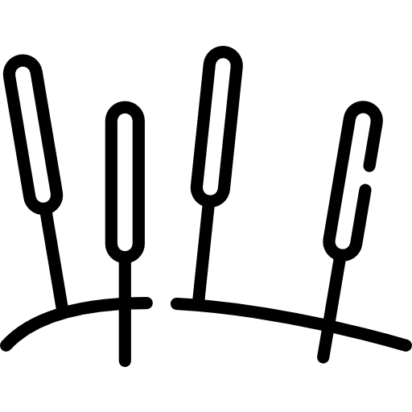

Acupuncture

Acupuncture is a safe, natural, drug-free and effective form of
treatment.
Acupuncture helps relieve the symptoms of a variety of health
problems as well as help uncover the underlying root of various
medical problems. Acupuncture is the practice of inserting thin
needles into specific points on the body in order to direct the
Qi to allow healing to take place. It can be used to reduce
pain, reduce inflammation, increase blood flow, increase range
of motion, decrease the side effects of medication-induced
nausea, decrease anxiety, and reduce muscle spasms. Also,
auricular therapy treats addiction, obesity and pain using
sticky seeds on the ear.
Please wear loose and comfortable clothing for easy access to
acupuncture points and do not eat a large meal before a
treatment session. An acupuncture session generally lasts 45
min. to an hour, although your first session can be 1 1/2 to 2
hours long.
Cosmetic Acupuncture
Each facial point is connected to a specific internal organ.
As the Qi moves and circulates, it strengthens the function of
that particular organ. It will improve blood and energy
circulation, nourish the skin with vital nutrients and
increase collagen production to diminish the appearance of
fine lines, winkles, sagging and dull skin.
It's a natural and non-invasive procedure.
It helps you look younger and feel more vibrant inside and
out.
No side-effects.
- Helps heal sun-damaged skin.
- Minimizes lines and wrinkles.
- Stimulates collagen and elastin production.
- Brightens skin tone.
- Helps diminish blemishes.
Acupressure
The practice of applying pressure on specific points on the body using the finger in order to promote healing in the body. It uses acupuncture points without the use of needles.
Gua Sha
The practice of repeated pressured strokes over the skin with a smooth edge, such as a water buffalo horn or jade, in order to increase blood circulation. It often results in blemishes of the skin, which goes away in 2-4 days.
Herbal Medicine
The use of natural herbs in order to promote the body's own healing process. Each prescription is a combination of many herbs and minerals tailored to the patient's needs and is prepared as a tea or decoction. Different herbs have different properties and can balance particular parts of the body.
Cupping
The use of heated suction cups in specific areas of the body to promote greater blood circulation. The skin under the cup often turns discolored, signifying a blockage of the Qi, correlating to the problematic and congested areas. The discoloration goes away within a few days. It is often used to treat pain, inflammation, improve blood flow, promote relaxation and well-being, and as a type of deep-tissue massage.
Moxibustion
The practice of applying indirect heat over a single point or large surface area on the body through the burning an herb called Artimesiae Vulgaris. It expels cold and warms the meridians, while promoting blood circulation. Moxibustion is used most often to treat patients experiencing cold or stagnant conditions.
Tui Na (Meridian Massage)
A form of therapeutic massage with an emphasis on grasping and pulling of the skin to stimulate the flow of blood, lymph, bodily fluids, and break up scar tissues and/or adhesions.